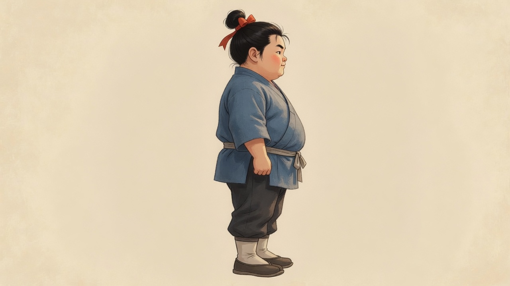
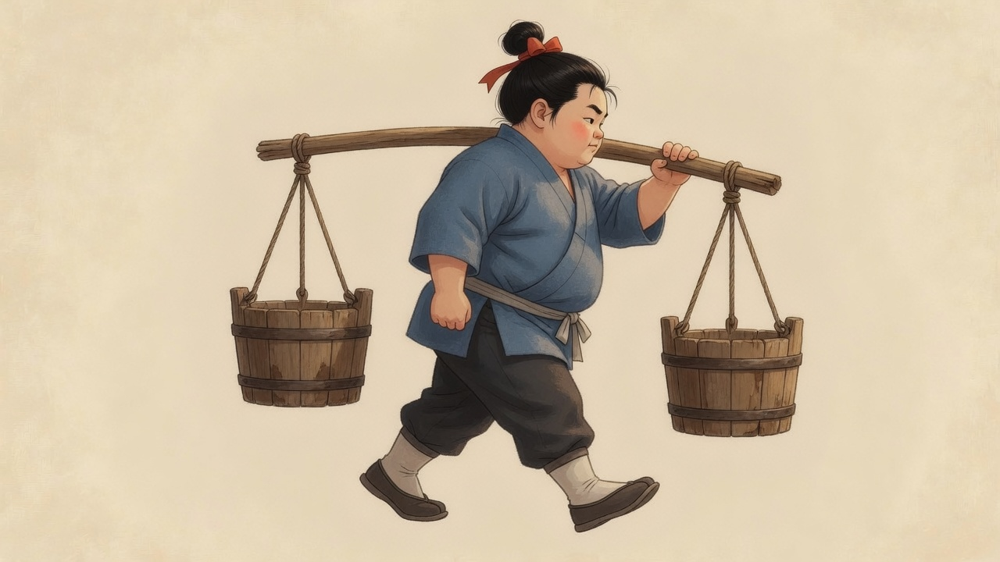
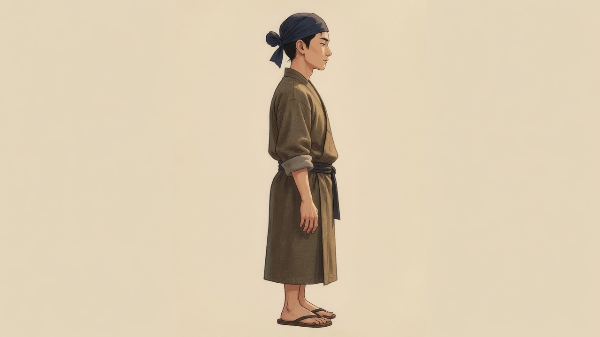

美術預演 · 10 秒 · 未連遊戲
左是初學負重，右是熟手空手穩步。0–2 秒待機，2–8 秒走路，8–10 秒主角停在負重定格上表示喘氣，熟手繼續走。紅虛線是腳底基準。影片裡的人會相對這條線漂移，所以這還不是可套用的 sprite。


腳底基準
主角 · 負重

腳底基準
熟手 · 穩步
待機
朝右為預設正面。掛點在肩上的扁擔兩端。選取圈與遮擋仍沿現有腳底 y，不在這頁重算。關鍵幀見 contact.html。